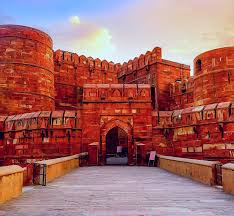
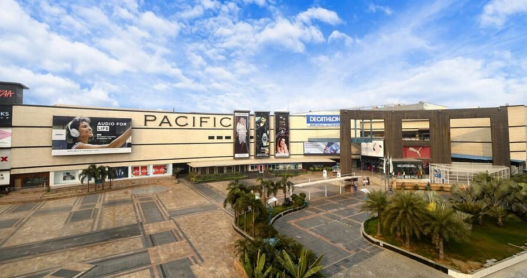
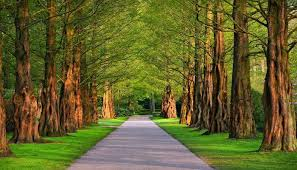
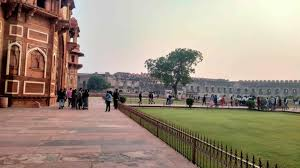

Agra Highlights
Nature Places

Mehtab Bagh
- Entry Fee: ₹50
- Timing: 6am - 6pm
- Description: Garden complex with stunning views of the Taj Mahal across the Yamuna River.

Ram Bagh
- Entry Fee: ₹15
- Timing: Sunrise to sunset
- Description: Oldest Mughal garden in India, built by Emperor Babur.

Soor Sarovar Bird Sanctuary
- Entry Fee: ₹30
- Timing: 8am - 6pm
- Description: Sanctuary with a tranquil lake, home to migratory birds and wildlife.
Historical Places

Taj Mahal
- Entry Fee: ₹0 (Entry fee varies for foreigners)
- Timing: 6am - 7pm
- Description: Iconic white marble mausoleum, one of the Seven Wonders of the World.

Agra Fort
- Entry Fee: ₹650 (Foreigners), ₹50 (Indians)
- Timing: 6am - 6pm
- Description: Majestic red sandstone fort with palaces, mosques, and Mughal history.

Fatehpur Sikri
- Entry Fee: ₹610 (Foreigners), ₹50 (Indians)
- Timing: Sunrise to sunset
- Description: UNESCO World Heritage Site — an abandoned Mughal city with palaces and mosques.

Itmad-ud-Daulah's Tomb
- Entry Fee: ₹250 (Foreigners), ₹30 (Indians)
- Timing: Sunrise to sunset
- Description: "Baby Taj" — beautiful mausoleum with intricate marble inlay work.

Sikandra (Akbar's Tomb)
- Entry Fee: ₹210 (Foreigners), ₹30 (Indians)
- Timing: Sunrise to sunset
- Description: Grand tomb complex with beautiful gardens, blend of Hindu and Islamic styles.
Malls

Taj Mahal Mall
- Entry Fee: Free
- Timing: 10am - 10pm
- Description: Popular shopping destination with brands, food court, and entertainment.

Pacific Mall
- Entry Fee: Free
- Timing: 10am - 10pm
- Description: Modern mall with shopping, dining, and multiplex cinema.

Sadar Bazaar
- Entry Fee: Free
- Timing: 11am - 9pm
- Description: Lively market for leather goods, sweets, handicrafts, and street food.
Restaurants

Peshawri
- Type: North Indian Restaurant
- Timing: 12:30pm - 3pm, 7pm - 11:30pm
- Description: Renowned for its authentic Mughlai cuisine and rustic ambiance.

Pinch of Spice
- Type: Multi-cuisine Restaurant
- Timing: 11am - 11pm
- Description: Popular spot for Indian, Chinese, and Continental dishes.

Shankar Ji
- Type: Vegetarian Restaurant
- Timing: 9am - 10pm
- Description: Famous for Agra’s local sweets, snacks, and thali meals.
Parks

Paliwal Park
- Entry Fee: Free
- Timing: 5am - 8pm
- Description: Large city park with boating, walking trails, and lush greenery.

Shahjahan Garden
- Entry Fee: Free
- Timing: 6am - 8pm
- Description: Beautiful landscaped garden near the Taj Mahal, perfect for picnics.

Agra Ecological Park
- Entry Fee: ₹20
- Timing: 7am - 7pm
- Description: Eco-friendly park with walking trails, birdwatching, and playgrounds.